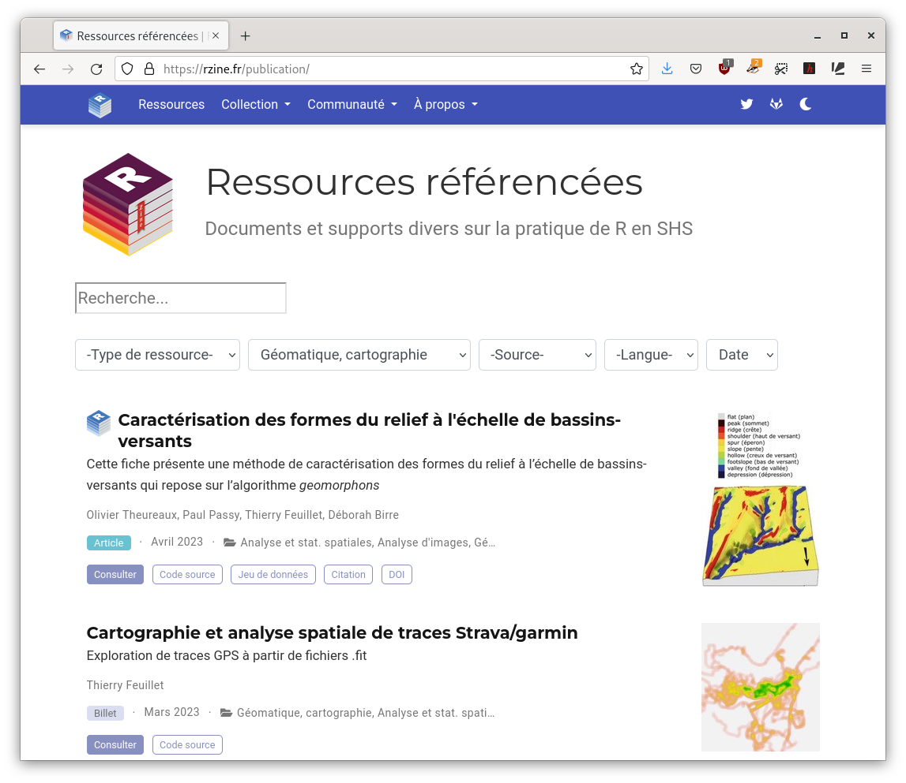

| Reverse Dependencies | ||||||
| Type | sf | stars | terra | raster | rgdal | rgeos |
|---|---|---|---|---|---|---|
| Depends | 35 | 3 | 14 | 64 | 9 | 8 |
| Imports | 413 | 27 | 119 | 281 | 109 | 69 |
| Suggests | 177 | 30 | 60 | 96 | 85 | 50 |
| Source : CRAN, 14 juin 2023 | ||||||
L’écosystème spatial de R
Rencontres R - Avignon
23 juin 2023
Vecteur et raster
Raster
C’est une image localisée dans l’espace.
L’information géographique est alors stockée dans des pixels.
Chaque pixel, défini par une résolution, possède des valeurs qui peuvent être traitées et cartographiées.

Vecteur et raster
Vecteur
Il s’agit d’objets géométriques de type points, lignes ou polygones.
Ces objets vectoriels ne pixellisent pas.
Chaque objet est défini par un identifiant unique.

Le socle du socle
Des bibliothèques géographiques largement utilisées :
- GDAL - Geospatial Data Abstraction Library (GDAL/OGR contributors, 2022)
- PROJ - Coordinate Transformation Software (PROJ contributors, 2021)
- GEOS - Geometry Engine - Open Source (GEOS contributors, 2021)

Il s’agit de dépendances externes
- Installation
- Reproductibilité
Envisager la conteneurisation (Nüst et Pebesma, 2021).
Le package sf

Publié fin 2016 par Edzer Pebesma.

Principales fonctionnalités
- import / export
- affichage
- géotraitements
- support des données non projetées (sur le globe)
- utilisation du standard simple feature
- compatibilité avec le pipe
(|>ou%>%) - compatibilité avec les opérateurs du
tidyverse.
Format

Les objets sf sont des data.frame dont l’une des colonnes contient des géométries.
Format très pratique, les données et les géométries sont intrinsèquement liées dans un même objet.
Affichage
plot(mtq)
plot(st_geometry(mtq))
Centroides

Agrégation

Zone tampon

Polygones de Voronoi
mtq_c |>
st_union() |>
st_voronoi() |>
st_collection_extract("POLYGON") |>
st_intersection(mtq_u) |>
st_sf() |>
st_join(mtq_c, st_intersects) |>
st_cast("MULTIPOLYGON") |>
st_geometry() |>
plot(col = "ivory4")
Le package terra

Le package terra permet de gérer des données vectorielles et surtout raster.
Il succède au package raster (Hijmans, 2023a) du même auteur.

Principales fonctionnalités
- Affichage
- Modifications de la zone d’étude (projection, crop, mask, agrégation, fusion…)
- Algèbre spatial (opérations locales, focales, globales, zonales)
- Transformation et conversion (rasterisation, vectorisation)
Cartographie thématique
D’autres packages : mapmisc, choropletr, oceanis…
Le package mapsf

mapsf offre la plupart des types de carte utilisés habituellement.
Successeur de cartography (Giraud et Lambert, 2017).
mf_map() est la fonction principale.
mf_map(x = objet_sf,
var = "variable",
type = "map type",
...)
Fonctionnalités principales
- 9 types de cartes
- Habillage (échelle, flèche nord…)
- Export (png et svg)
- Thèmes
- Insets
- Labels

Utilisation simple

Utilisation avancée
# Export a map with a theme and extra margins
mf_theme("agolalight", bg = "ivory1")
mf_export(
x = mtq, filename = "img/mtq.png",
width = 600, res = 120,
expandBB = c(0, 0, 0, .3)
)
# Plot a shadow
mf_shadow(mtq, col = "grey90", add = TRUE)
# Plot a choropleth map
mf_map(
x = mtq, var = "MED", type = "choro",
pal = "Dark Mint",
breaks = "quantile",
nbreaks = 6,
leg_title = "Median Income\n(euros)",
leg_val_rnd = -2,
add = TRUE
)
# Start an inset map
mf_inset_on(x = "worldmap", pos = "right")
# Plot mtq position on a worldmap
mf_worldmap(mtq, col = "#0E3F5C")
# Close the inset
mf_inset_off()
# Plot a title
mf_title("Wealth in Martinique, 2015")
# Plot credits
mf_credits("T. Giraud\nSources: INSEE & IGN, 2018")
# Plot a scale bar
mf_scale(size = 5)
# Plot a north arrow
mf_arrow("topleft")
dev.off()
Cartographie interactive

leaflet (Cheng et al., 2023), repose sur la bibliothèque JS leaflet

mapview (Appelhans et al., 2022), repose sur le package leaflet
mapdeck (Cooley, 2020), repose sur les bibliothèques JS Mapbox GL et Deck.gl
tmap dispose d’un mode interactif (qui s’appuie sur le package leaflet aussi).
Palettes de couleurs
De nombreuses palettes sont directement disponibles dans R-base et près de 70 (!) packages proposent des palettes.

hcl.colors()paletteer(Hvitfeldt, 2021) propose 2587 palettes (!!!)cols4all(Tennekes, 2023) propose une app shiny

cols4all::c4a_gui()Acquisition des données

Le package osmdata (Padgham et al., 2017) utilise l’API du service Overpass turbo pour extraire des données de la BD OpenStreetMap.
Nous utilisons le système de clef/valeur d’OSM pour construire la requête.
library(mapsf)
library(osmdata)Data (c) OpenStreetMap contributors, ODbL 1.0. https://www.openstreetmap.org/copyright(bbox_avignon <- getbb("Avignon, Quartier Centre")) min max
x 4.798405 4.818405
y 43.938975 43.958975resto <- bbox_avignon |>
opq(osm_types = "node")|>
add_osm_feature(key = 'amenity', value = "restaurant") |>
osmdata_sf() |>
_$osm_points |>
mf_map()OpenStreetMap
 Une base de données cartographique libre et contributive.
Une base de données cartographique libre et contributive.
Conditions d’utilisation
OpenStreetMap est en données libres : vous êtes libre de l’utiliser dans n’importe quel but tant que vous créditez OpenStreetMap et ses contributeurs. Si vous modifiez ou vous appuyez sur les données d’une façon quelconque, vous pouvez distribuer le résultat seulement sous la même licence. (…)
Contributions
(…) Nos contributeurs incluent des cartographes enthousiastes, des professionnels du SIG, des ingénieurs qui font fonctionner les serveurs d’OSM, des humanitaires cartographiant les zones dévastées par une catastrophe et beaucoup d’autres. (…)
Couverture/complétude
- Données France : 4,1 GB
- Données Chine : 0,99 GB
- Données Afrique : 5,8 GB
De l’hotel à la conf…

Le package osrm (Giraud, 2022b) permet de calculer des trajets par le plus court chemin en s’appuyant sur les données d’OSM.
Cartographie des routes
mf_export(center, "img/avignon_routes.png", width = 768, res = 110)
mf_map(center, col = "#f2efe9", border = NA, add = TRUE)
mf_map(river, col = "#aad3df", border = "#aad3df", lwd = .5, add = TRUE)
mf_map(esp_vert, col = "#c8facc", border = "#c8facc", lwd = .5, add = TRUE)
mf_map(rail, col = "grey50", lty = 2, lwd = .2, add = TRUE)
mf_map(routes, col = "white", border = "white", add = TRUE)
mf_map(batiments, col = "#d9d0c9", border = "#c6bab1", lwd = 1, add = TRUE)
mf_map(routes_hotel, col = "#940000", lwd = 2, add = TRUE)
mf_map(hotel, col = "white", bg = "#000094", pch = 21, lwd = 1, cex = 1, add = TRUE)
mf_map(geoconf, col = "white", bg = "#646400", pch = 22, lwd = 1, cex = 3, add = TRUE)
mf_map(center, col = NA, border = "grey25", lwd = 4, add = TRUE)
mf_title("Toutes les routes mènent aux Rencontres R")
mf_credits("T. Giraud, 2023\nOpenStreetMap contributors, 2023")
mf_scale(100, unit = "m")
mf_arrow(pos = "topright")
dev.off()De l’hotel à la conf…

Il est possible d’agréger les tronçons empruntés par plusieurs routes grâce au package stplanr (Lovelace et Ellison, 2018).
library(stplanr)
routes_hotel$w <- 1
routes_hotel_ag <- overline2(routes_hotel, "w")Nous pouvons ensuite cartographier ces tronçons agrégés par classes de taille.
Cartographie
mf_export(center, "img/avignon_routes_ag.png", width = 768, res = 110)
mf_map(center, col = "#f2efe9", border = NA, add = TRUE)
mf_map(river, col = "#aad3df", border = "#aad3df", lwd = .5, add = TRUE)
mf_map(esp_vert, col = "#c8facc", border = "#c8facc", lwd = .5, add = TRUE)
mf_map(rail, col = "grey50", lty = 2, lwd = .2, add = TRUE)
mf_map(routes, col = "white", border = "white", add = TRUE)
mf_map(batiments, col = "#d9d0c9", border = "#c6bab1", lwd = 1, add = TRUE)
mf_map(routes_hotel_ag, var = "w", type = "grad",
breaks = c(1,5,10,20,30,33),
lwd = c(2,5,9,13,19),
leg_pos = "topleft", col= "#940000",
leg_title = 'Nombre de trajets\nempruntant la voie',
add = TRUE)
mf_map(hotel, col = "white", bg = "#000094", pch = 21, lwd = 1, cex = 1, add = TRUE)
mf_map(geoconf, col = "white", bg = "#646400", pch = 22, lwd = 1, cex = 3, add = TRUE)
mf_map(center, col = NA, border = "grey25", lwd = 4, add = TRUE)
mf_title("Toutes les routes mènent aux Rencontres R")
mf_credits("T. Giraud, 2023\nOpenStreetMap contributors, 2023")
mf_scale(100, unit = "m")
mf_arrow(pos = "topright")
dev.off()Geocomputation with R

Spatial Data Science with applications in R

Pebesma et Bivand (2023)
Spatial Data Science with R and “terra”

Robert J. Hijmans (2023)
Rzine

Rzine vise à Encourager la production et favoriser la diffusion de documentation sur la pratique de R en SHS.
- Référencement de documents et supports divers.
- La collection Rzine : publications open source, open peer review.

ElementR
ElementR est un groupe d’autoformation qui fédère trois unités de recherche en géographie : l’UMR Géographie-Cités, l’UMR PRODIG et l’UAR RIATE.
Ses activités sont accessibles à l’ensemble des membres du Campus Condorcet.

Merci de votre attention

Bibliographie

Appelhans, T., Detsch, F., Reudenbach, C. et Woellauer, S. (2022). mapview: Interactive Viewing of Spatial Data in R. https://CRAN.R-project.org/package=mapview
Baddeley, A., Rubak, E. et Turner, R. (2015). Spatial Point Patterns: Methodology and Applications with R. Chapman; Hall/CRC Press. https://www.routledge.com/Spatial-Point-Patterns-Methodology-and-Applications-with-R/Baddeley-Rubak-Turner/p/book/9781482210200/
Bivand, R. (2021). Progress in the R ecosystem for representing and handling spatial data. Journal of Geographical Systems, 23(4), 515‑546. https://doi.org/10.1007/s10109-020-00336-0
Bivand, R., Keitt, T. et Rowlingson, B. (2023). rgdal: Bindings for the ’Geospatial’ Data Abstraction Library. https://CRAN.R-project.org/package=rgdal
Bivand, R. et Rundel, C. (2023). rgeos: Interface to Geometry Engine - Open Source (’GEOS’). https://CRAN.R-project.org/package=rgeos
Cambon, J., Hernangómez, D., Belanger, C. et Possenriede, D. (2021). tidygeocoder: An R package for geocoding. Journal of Open Source Software, 6(65), 3544. https://doi.org/10.21105/joss.03544
Cheng, J., Karambelkar, B. et Xie, Y. (2023). leaflet: Create Interactive Web Maps with the JavaScript ’Leaflet’ Library. https://CRAN.R-project.org/package=leaflet
Cooley, D. (2020). mapdeck: Interactive Maps Using ’Mapbox GL JS’ and ’Deck.gl’. https://CRAN.R-project.org/package=mapdeck
Dunnington, D. (2023). ggspatial: Spatial Data Framework for ggplot2. https://CRAN.R-project.org/package=ggspatial
GDAL/OGR contributors. (2022). GDAL/OGR Geospatial Data Abstraction software Library. Open Source Geospatial Foundation. https://doi.org/10.5281/zenodo.5884351
GEOS contributors. (2021). GEOS coordinate transformation software library. Open Source Geospatial Foundation. https://libgeos.org/
Giraud, T. (2022a). mapsf: Thematic Cartography. https://CRAN.R-project.org/package=mapsf
Giraud, T. (2022b). osrm: Interface Between R and the OpenStreetMap-Based Routing Service OSRM. Journal of Open Source Software, 7(78), 4574. https://doi.org/10.21105/joss.04574
Giraud, T. (2023a). mapiso: Create Contour Polygons from Regular Grids. https://CRAN.R-project.org/package=mapiso
Giraud, T. (2023b). maptiles: Download and Display Map Tiles. https://CRAN.R-project.org/package=maptiles
Giraud, T. et Lambert, N. (2017). Reproducible Cartography. M. Peterson (dir.), Cham, Switzerland (p. 173‑183). https://doi.org/10.1007/978-3-319-57336-6_13
Giraud, T. et Pecout, H. (2023a). Cartographie avec R. https://doi.org/10.5281/zenodo.7528161
Giraud, T. et Pecout, H. (2023b). Géomatique avec R. https://doi.org/10.5281/zenodo.7528145
Hijmans, R. J. (2023a). raster: Geographic Data Analysis and Modeling. https://CRAN.R-project.org/package=raster
Hijmans, R. J. (2023b). terra: Spatial Data Analysis. https://CRAN.R-project.org/package=terra
Hvitfeldt, E. (2021). paletteer: Comprehensive Collection of Color Palettes. https://github.com/EmilHvitfeldt/paletteer
Lambert, N. et Zanin, C. (2016). Manuel de cartographie: principes, méthodes, applications. Armand Colin.
Lovelace, R. et Ellison, R. (2018). stplanr: A Package for Transport Planning. The R Journal, 10(2). https://doi.org/10.32614/RJ-2018-053
Lovelace, R., Nowosad, J. et Muenchow, J. (2019). Geocomputation with R. CRC Press. https://r.geocompx.org/
Nüst, D. et Pebesma, E. (2021). Practical Reproducibility in Geography and Geosciences. Annals of the American Association of Geographers, 111(5), 1300‑1310. https://doi.org/10.1080/24694452.2020.1806028
Padgham, M., Rudis, B., Lovelace, R. et Salmon, M. (2017). osmdata. Journal of Open Source Software, 2(14), 305. https://doi.org/10.21105/joss.00305
Pebesma, E. (2018). Simple Features for R: Standardized Support for Spatial Vector Data. The R Journal, 10(1), 439‑446. https://doi.org/10.32614/RJ-2018-009
Pebesma, E. et Bivand, R. (2023). Spatial Data Science: With applications in R (p. 352). Chapman and Hall/CRC. https://r-spatial.org/book/
PROJ contributors. (2021). PROJ coordinate transformation software library. Open Source Geospatial Foundation. https://proj.org/
Tennekes, M. (2018). tmap: Thematic Maps in R. Journal of Statistical Software, 84(6), 1‑39. https://doi.org/10.18637/jss.v084.i06
Tennekes, M. (2023). cols4all: Colors for all. https://CRAN.R-project.org/package=cols4all